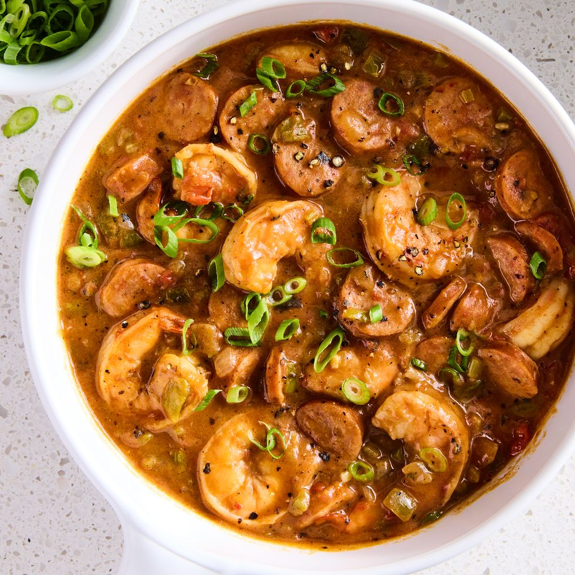

Return Home
Gumbo

Make your own shrimp & sausage Gumbo!
Gumbo can be a bit more time consuming than simple burritos, but is well worth the effort.
Below, we will run through the ingredients and steps to create your own delicious pot of Gumbo!
Ingredients

For this meal you will need:
- 4 tbsp. unsalted butter
- 1/4 c. all-purpose flour
- 1 small yellow onion, chopped
- 1 medium green bell pepper, seeds and ribs removed, chopped
- 2 stalks celery, finely sliced
- 12 oz. andouille sausage, sliced into 1/2" rounds
- 2 cloves garlic, minced
- 1 tbsp. cajun seasoning (without salt)
- Kosher salt
- black pepper
- 4 c. low-sodium chicken broth
- 1 (15-oz.) can fire-roasted diced tomatoes
- 1 lb. medium shrimp, peeled and deveined
- 3 scallions, sliced
- cooked white rice, for serving
Time To Cook!
- In a large, deep skillet over medium-low heat, melt butter, then add flour.
- Cook, stirring constantly, until roux is dark caramel colored, 12 to 15 minutes.
- Add onions, peppers, and celery. Cook, stirring, until softened, about 8 minutes.
- Stir in sausage, garlic, and Cajun seasoning; season with salt and pepper.
- Stir in broth, and tomatoes, then bring to a boil.
- Reduce heat to low and simmer, stirring occasionally until thickened, about 1 hour.
- In the last 6 minutes of cooking, add shrimp.
- Once shrimp is pink and cooked through, taste and adjust seasonings.
- Stir in scallions, reserving some for serving.
- Divide rice among bowls. Spoon gumbo over. Top with reserved scallions.
ENJOY!